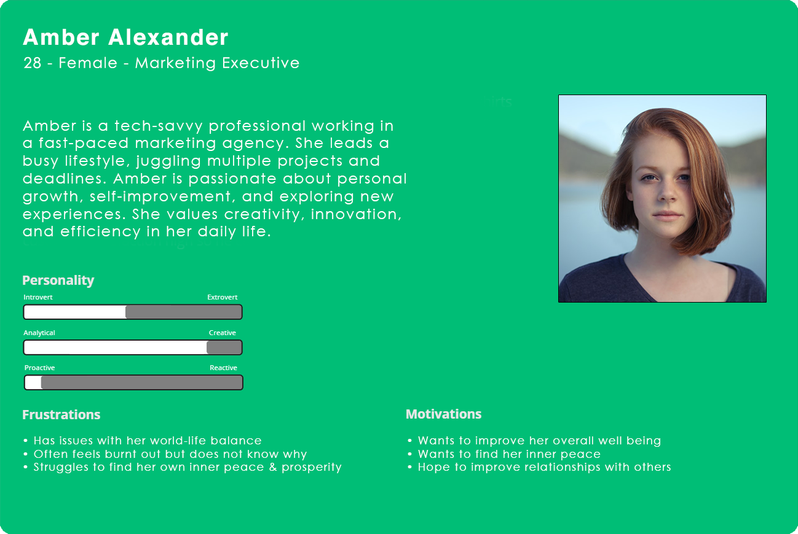
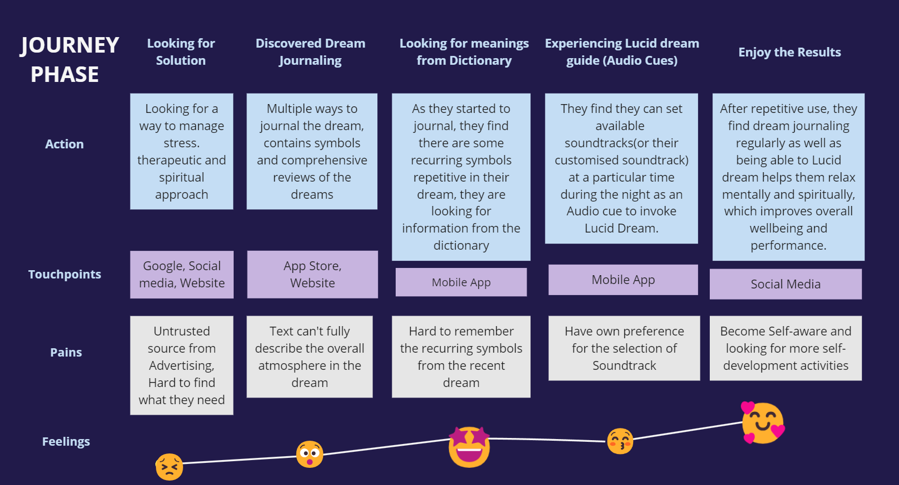
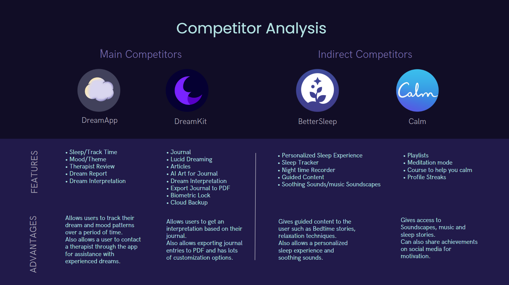
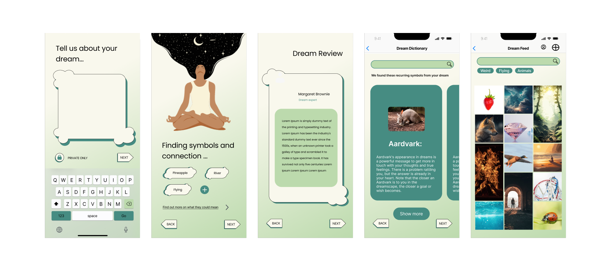
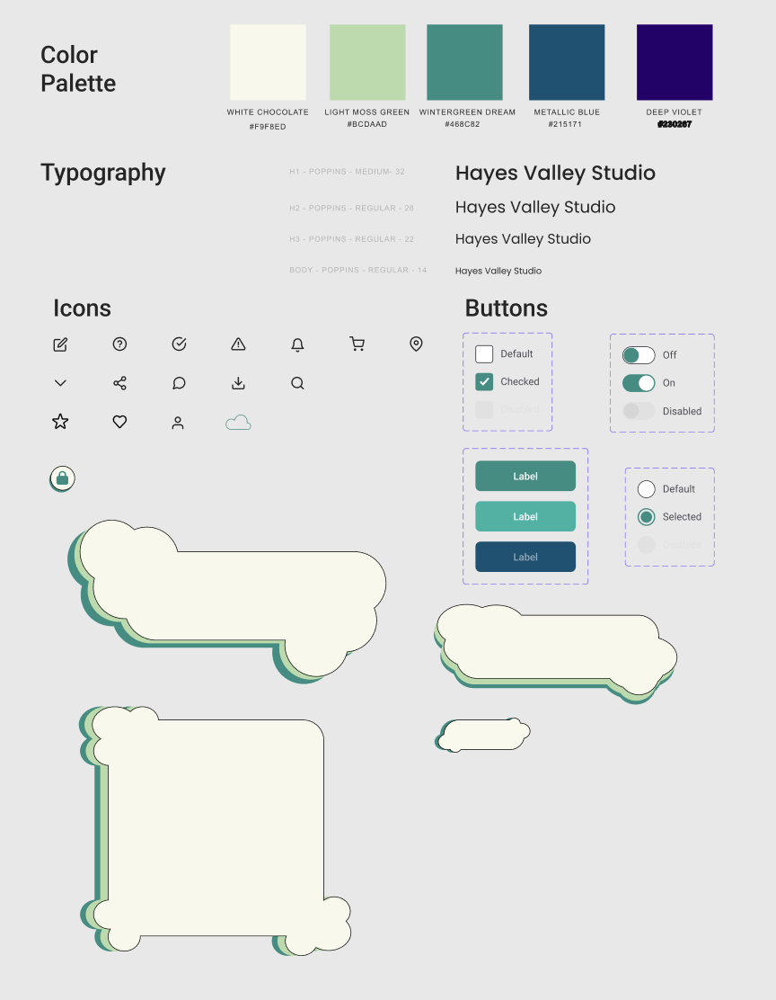
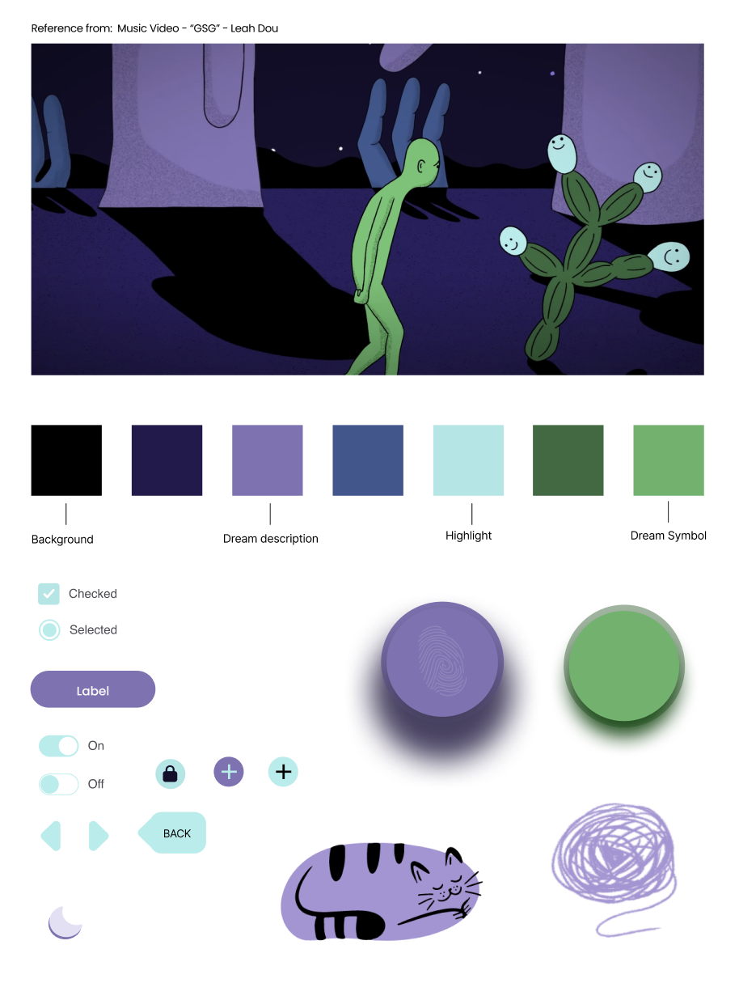
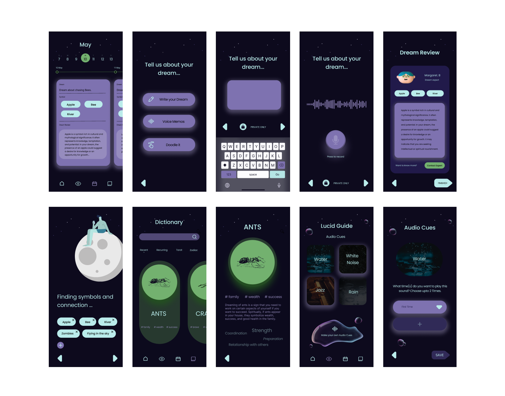
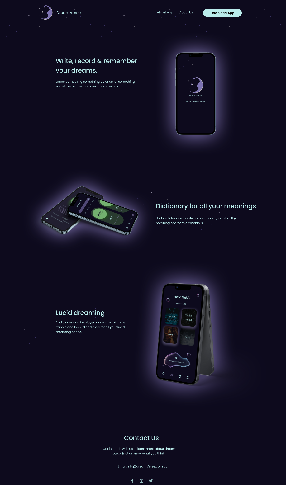

I started this project with classmates Swetha and Chloe, inspired to create a newer solution for dream journaling, we wanted to research, collate data and find ways to create an app that would not only create healthy competition in the same space, but to make it more friendly to for people who consistently journal their dreams and experiences. Through research and iterative testing, we created a product that would fit the users needs, with more features that can be added later as time goes on.
Create a Dream Journaling app that encompasses what users need, while also incorporating a dream dictionary, journal and other systems for not only journaling but alleviating stress for those that believe in them.
All the different Dream Journaling apps while giving users the functionality to note down their dreams are all doing so via their own single method, this creates a problem whereby if users want a certain functionality they need to use another app entirely.
For this project i conducted some of the research, collated the data together with colleagues and collectively created a plan, after which we created our wireframes together, later i worked on the HTML, CSS and Jscript with the Bootstrap framework with Swetha.
Our goals we wanted to ensure we were targeting the correct kind of users but also ensure the app would meet expectations, starting with intended base functionality with the ability to add more as time goes on.
I want to understand:
• Users we are targeting
• Functionalities commonly used by users/people
• Colour scheme fits with our app & brand
We used an assortment of methodologies to conduct our research and sort our data into something understandable, including but not limited to (in no particular order):
• Card Sorting
• Usability Testing
• Concept Testing
• Wireframing
• User Research
• Prototyping
• Affinity Diagramming
• Iterative Testing & Feedback
We were surprised to learn that users often have many different methods of how they wish to input information into journal apps, though other apps only have one single method of input which is text typing, with this information we can craft new input systems to suit many of our users needs without being overwhelming or complicated.
The insights gained from user testing and research gave us the confidence that we needed telling us we were heading in the right direction in terms of catering to users and features they wanted.
We compiled and condensed the results from the research into an affinity map, from there we could create our user persona as a representation of our target user. 
How might we help people who is struggling with stress to start journaling their dream, so that they can understand the reason behind their current emotional state and achieve personal growth.
We believe that by creating a dream journal app for people who are struggling with stress, nightmares, unusual dreams, this will help people to be more self-aware and be less stressed.
Hence, people who journal their dreams help them to process it better than thinking on it for a long time, leading to less stress and anxiety.
A user journey map was created in tandem with our User Persona and hypothesis in mind, giving us visualization on how a user goes through the process to reach their goal.
We tested out competitor apps across different platforms (android, iOS), and while there were a number of competitor apps (7 to 9 total) we chose 4 of them, 2 the most direct and the other 2 indrect but as similar as possible to the goals we aligned for our app.
The first prototype version of lo-fi wireframes allowed us to run usability tests to discover and prioritise fixes, changes and additional features that need to be implemented from the start. By doing this, it decreased the number of iterations for later revisions towards the hi-fidelity version of the website.
The version below is just before initial testing, during testing we took notes and made iterations based on received feedback.
We initially started with a completely different UI Kit that we thought would suit our app theme, but later ended up making a drastic change as testing revealed to us that an overwhelming number of users did not associate the colour scheme and theme to the goals of our app.

Upon completion of our testing and collating the data collected, we discovered that some things did not go as we originally planned or were received very well, and required us to immediately make an iteration for our app prototype.
Notably the following results:
• 65% of users felt the prototype color scheme did not match the function and feel the app was going for
• 50% of users did not like the bubble/thought shaped windows for various reasons
• 80% of users did not know their own star signs, which made it difficult to complete the onboarding process as the star signs did not have any identifiable text.
Despite the shortcomings we did see some positives from our feedback:
• 90% of users enjoyed the DreamDictionary and being able to look up meanings and interpretations
• 87% of users said the DreamFeed layout is great, easily understood and usable
Once we had the results we prioritized the worst performing metrics to be fixed first as we understood if the users were not happy they would not use our app.
After thinking about this, we re-designed and picked a new colour scheme to better suit our goal with a number of improvements made along the way, our reference and inspiration used is from a music video called GSG by Leah Dou.
The colour scheme and theme was universally agreed to be a substantially better fit for our app going forward.
Our Hi-Fi prototype started with a completely re-designed and re-themed Mobile app based on the feedback we got from previous user testing.
Testing was once again done on the Hi-Fi prototype iteration to ensure our changes had the intended effect, we compiled the various data that we all collected and results confirmed we had fixed out initial problems from the low-fidelity prototype, with no glaring issues at present we moved onto a website landing page prototype.
The implementation of interactive prototypes and usability testing allowed us to gather valuable insights and refine the design iteratively. Incorporating user feedback and data-driven insights, we were able to make informed design decisions and optimize the application for enhanced user satisfaction and engagement.